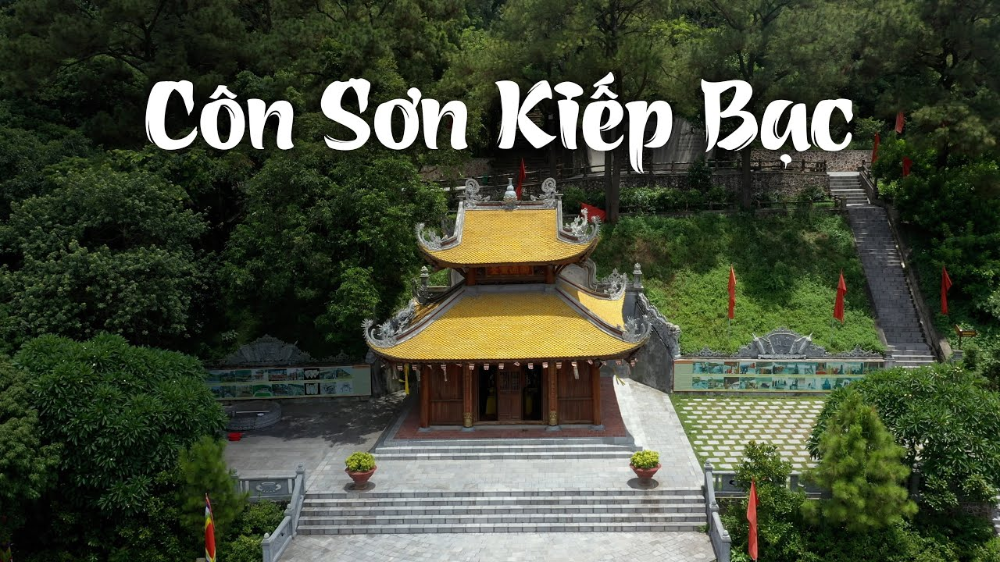

CÔN SƠN – KIẾP BẠC
Côn Sơn – Kiếp Bạc, phường Cộng Hòa, thành phố Chí Linh, Hải Dương

Lịch Sử Hình Thành
Khu di tích Côn Sơn – Kiếp Bạc là quần thể di tích lịch sử, văn hóa và danh lam thắng cảnh nổi tiếng của Việt Nam, gắn liền với nhiều nhân vật lịch sử và sự kiện quan trọng của dân tộc.
Côn Sơn là một trong ba trung tâm của Thiền phái Trúc Lâm Yên Tử từ thế kỷ XIII–XIV. Đây là nơi Đệ tam Tổ Huyền Quang trụ trì, đồng thời gắn bó mật thiết với Anh hùng dân tộc, Danh nhân văn hóa thế giới Nguyễn Trãi, người đã nhiều lần về đây sống, đọc sách, sáng tác và để lại nhiều tác phẩm văn học nổi tiếng.
Kiếp Bạc là căn cứ quân sự quan trọng của Quốc công Tiết chế Trần Hưng Đạo trong cuộc kháng chiến chống quân Nguyên – Mông thế kỷ XIII. Sau khi ông qua đời, nhân dân lập đền Kiếp Bạc để tưởng nhớ công lao và thờ phụng ông. Đền Kiếp Bạc trở thành một trong những trung tâm tín ngưỡng lớn của Việt Nam.
Ngày 28/4/1962, Bộ Văn hóa xếp hạng Côn Sơn và Kiếp Bạc là Di tích lịch sử – văn hóa cấp Quốc gia. Năm 2012, Thủ tướng Chính phủ quyết định xếp hạng Di tích quốc gia đặc biệt đối với Khu di tích Côn Sơn – Kiếp Bạc. Cùng năm, Lễ hội Côn Sơn và Lễ hội Kiếp Bạc được ghi danh là Di sản văn hóa phi vật thể quốc gia.
Ngày 12/7/2025, Quần thể Yên Tử – Vĩnh Nghiêm – Côn Sơn, Kiếp Bạc được UNESCO ghi danh là Di sản Văn hóa Thế giới, khẳng định giá trị nổi bật toàn cầu của quần thể di tích này.
Ý Nghĩa Lịch Sử
- Là nơi gắn liền với sự nghiệp của Trần Hưng Đạo, vị anh hùng dân tộc lãnh đạo ba lần kháng chiến chống quân Nguyên – Mông.
- Là nơi gắn bó với Nguyễn Trãi, Danh nhân văn hóa thế giới, Anh hùng dân tộc Việt Nam.
- Là một trong những trung tâm quan trọng của Thiền phái Trúc Lâm Yên Tử, góp phần phát triển Phật giáo Việt Nam.
- Là quần thể di tích phản ánh quá trình dựng nước, giữ nước và phát triển văn hóa dân tộc qua nhiều thế kỷ.
Ý Nghĩa Văn Hóa
- Là trung tâm tín ngưỡng và lễ hội truyền thống nổi tiếng của Việt Nam.
- Bảo tồn nhiều giá trị về lịch sử, kiến trúc, tôn giáo và cảnh quan thiên nhiên.
- Hai lễ hội Côn Sơn và Kiếp Bạc góp phần gìn giữ bản sắc văn hóa dân tộc và giáo dục truyền thống yêu nước.
- Việc được UNESCO ghi danh là Di sản Văn hóa Thế giới đã khẳng định giá trị nổi bật của quần thể di tích trong kho tàng di sản nhân loại.
Thông Tin Tham Quan
Giờ mở cửa:
- Mở cửa tất cả các ngày trong tuần (Thứ Hai – Chủ Nhật), kể cả các ngày Lễ và Tết.
Giá vé tham quan:
- Khu di tích Côn Sơn: 20.000 đồng/người/lượt.
- Khu di tích Kiếp Bạc: 20.000 đồng/người/lượt.